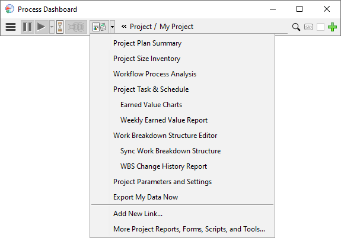

Working with Personal Projects
After you've created a personal
project, the dashboard will offer a rich set of tools for building a
plan and tracking your work.
To access these tools,
select the project on the main
dashboard toolbar, then click on the
Project Reports and Tools
button:

The sections below outline the use of these tools on a personal project.
These are the same tools that are available to project teams, so you'll see
links below that take you to more information in the "team use" section of the
User's Manual. The key difference is that a personal project has only
one team member (you); so some of the user interfaces described in the team
help will be streamlined to hide team-related elements you don't need.
Editing the Work Breakdown Structure
To build your task plan, you will use the
Work Breakdown Structure
Editor.
- Your first step will be to capture the
components and
subcomponents that need to be created, and estimate the time each will
require. During this process you can use
estimation tables to speed up your planning, and
milestones to visualize iterative development.
- As you enter components, a bar at the bottom of
the WBS Editor window will display the date when the work could finish. This
calculation is based on the number of planned hours per week you entered when
you created the project; but you can adjust those hours by choosing "Edit
Planned Time per Week" from the WBS Editor "Schedule" menu. (The window for
editing planned time is similar to the
team member
list on a team project, but has been streamlined to remove team-related
elements you don't need.)
- Once you've identified the components you'll be
working on first, you'll need to create tasks underneath them. You can create
tasks by adding rows to the WBS and
changing
them to an appropriate task type. But a much faster approach is to
create workflows and
apply them to
the components in your plan.
Working with your Personal Plan
The tasks you created in the WBS will appear in your personal plan in the
main dashboard toolbar.
- As you work, you can choose various components
and tasks using the active task
selector.
- Log
time and
defects against tasks as you
work, and mark them complete
as they are finished.
- Choose "Project Task & Schedule" from the
project reports and tools button to view your
personal project
schedule. You can use this window to plan the tasks you'll work on first,
second, and so on.
- If you used a workflow to build the task plan
for a component, and if that workflow includes a
PROBE
task, the project tools button will provide a
Size Estimating Template to
help you refine your component estimate, and a Plan Summary form to help
you capture size metrics and analyze component quality.
- For components that do not use a PROBE-based
workflow, you can enter planned and actual size data in the Work Breakdown
Structure window.
Tracking Progress
As you work, the project reports and tools button
will offer a number of charts and reports to help you track your progress.
- The first element on the menu is a "Project
Plan Summary" report. It pulls together cost, schedule, and quality data to
provide a comprehensive view of current project status.
- The "Workflow Process Analysis" option provides
detailed insight into process metrics for the workflows you've created. It
pulls data from components you've marked complete to show "To Date" summaries
and long-term trends.
- The "Earned Value Charts" and "Weekly Earned
Value Report" options let you jump directly into various views of schedule
progress.
- The "WBS Change History Report" can show you
how your plan has evolved over time.
Managing Iterations
Project development is an iterative process. When a project iteration
comes to an end, you can choose
" → Alter Project"
to perform the following actions:
→ Alter Project"
to perform the following actions:
- Relaunch will close the current project
and move the remaining work to a fresh new project plan. It's useful at the
beginning of a new sprint, cycle, or iteration, when you want to focus on the
work moving forward.
- Close can be used on a project that has
been finished or cancelled, to indicate that no more work will be performed
there.
- Delete will delete a personal project
from your dashboard. This action is not reversible, so you should only use it
if the project was created by mistake, or if it was aborted before you
collected any meaningful data worth saving.